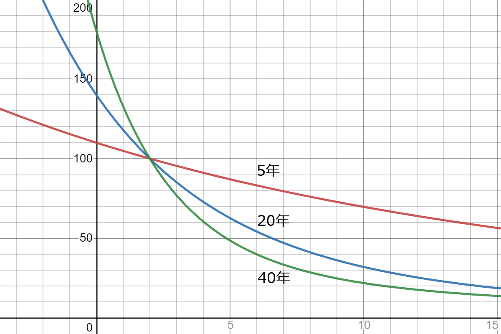
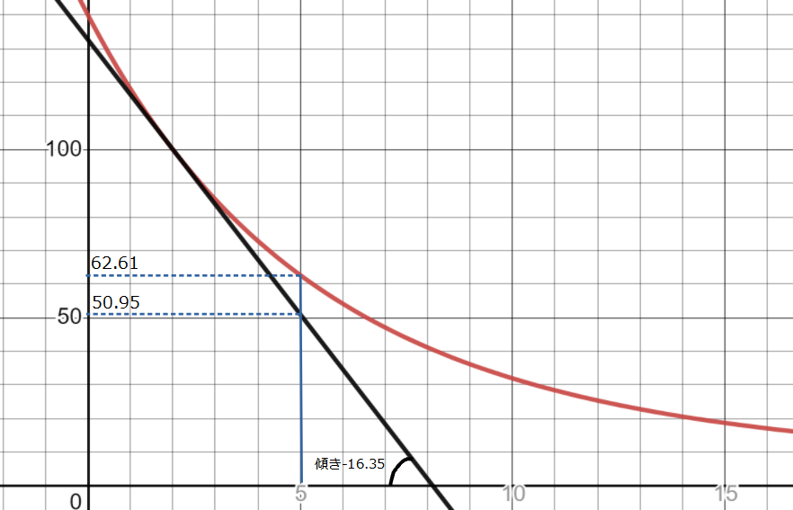
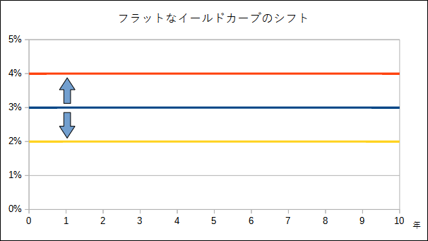
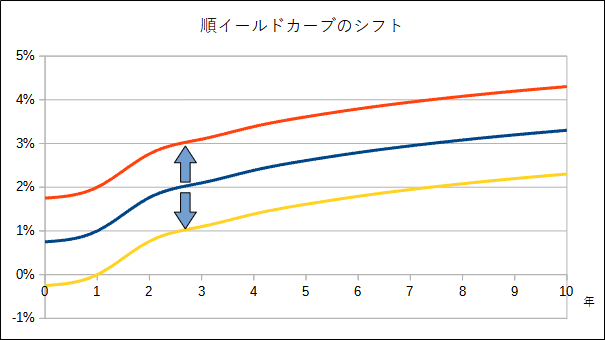
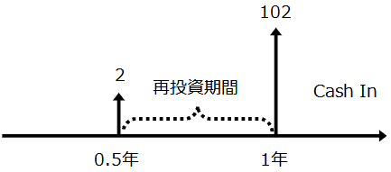

金利リスクとデュレーション
国債は信用リスクが全く無いと考えてもよい金融商品ですが、価格変動リスクが存在するため、リスクの全くない資産と考えるのは誤りです。国債の価格は金利の変動によって生じます。しかしながら会計上は「償却原価で測定される金融資産」(financial assets measured at amortized cost)として国債を保有していれば、その公正価値がどれほど低下しようとも信用リスクがゼロなので、減損はあり得ません。
銀行業のような償却原価で測定される資産の割合が大きい場合、公正価値の変動がPLに直接的に影響を与えないためリスクが過小評価される恐れがあります。金利リスクがPLに現れるのは、調達金利（＝支払利息）に比べて運用金利（＝受取利息）が相対的に低くなったり、同業他社と比べて利息収入が見劣りしたりするといった時であり、これらは間接的にしか観察されません。
例：割引債の評価と会計上の損益
１年後に101円を得られる割引債を100円で購入しました。その直後、世の中の資金需要が高まったため、 同じ債券の発行体が発行した債券は１年後に103円を支払うものになりました。最初に100円で購入した債券の公正価値は、 $$ \begin{aligned} \frac{101}{(1 + 0.03)} = 98.06 & \\ \end{aligned} $$ となります。償却原価では価値の下落２円をPLに認識することはありません。１年後に利息収入１円をPLに認識して 終わりです。しかし、他社は同じ期間で３円の収益を得ています。なので、即座に評価を落とさなくてもよい代わりに、 将来の収益が他社と比べて目減りしていることになります。
評価減のように直接帳簿上で処理するものではないため、保険業のように債券を公正価値評価する業種以外では、経理部門が金利リスク意識する機会はあまりないかもしれません。 しかし、公正価値の開示や、FVTPLやFVTOCIとなる債券も保有する可能性はあるため、全く知らなくて済む話でもありません。 以下では、金利リスクの考え方と金利が変動した場合の具体的な債券価格への影響額を知るための基礎概念を解説していきます。
債券価格と金利
債券価格と金利は逆の動きをします。このことをグラフで確認しましょう。下の図は、額面１００、２％クーポンの債券について満期が５年、２０年、４０年の場合のグラフです。縦軸が債券価格、横軸が満期利回り（＝実効金利）を表しています。
 図1. 満期日が異なる債券の価格利回り曲線
利回りが２％であるときは、どの債券価格も100ですが、そこから利回りが増減したときの価格変動額は満期までの期間によって大きく異なることが分かります。４０年満期の変動額は５年満期の変動額に比べて大きくなります。変動額の大きさ＝リスクの大きさ なので、４０年満期債券は５年満期債権に比べ大きなリスクを持っていることになります。
| 満期利回り | ５年満期 | ２０年満期 | ４０年満期 |
|---|---|---|---|
| 0% | 110 | 140 | 180 |
| 1% | 104.85 | 118.05 | 132.83 |
| 2% | 100 | 100 | 100 |
| 3% | 95.42 | 85.12 | 76.89 |
| 4% | 91.10 | 72.82 | 60.41 |
| 5% | 87.01 | 62.61 | 48.52 |
上の表からも、利回りの変動に対する債券価格の変化は、満期までの期間が関係していることが分かります。 以降では、債券投資から得られるキャッシュ・フローの回収期間と金利リスクの指標であるデュレーションと呼ばれる概念を紹介します。
デュレーション
時間を $t_0, t_1, t_2, \cdots , t_n$ とし、$PV(t_k)$ を時点 $t_k$ で生じるキャッシュ・フローの 現在価値としたとき、 $$ D = \frac{PV(t_0)t_0 + PV(t_1)t_1 + \cdots + PV(t_n)t_n}{PV} $$ をデュレーション(duration)と呼びます。$D$はキャッシュ・フローの現在価値の加重平均です。 ゆえに、$D$そのものは時間の単位を持っています。このことからデュレーションは「債券投資からの平均回収期間を示す」と解釈できます。
ここでの定義は抽象的であり、$PV$の具体的な計算については何も言及していません。実際に使われる指標は、以下の計算により求めます。
マコーレー・デュレーション
債券に対してデュレーションを計算する場合、$PV$は債券利回りをもとに計算するのが自然です。 具体的には、期間$k$の支払いが$c_k$であり、満期まで$n$期間残っているものとします。マコーレー・デュレーションは、 $$ D = \sum\limits_{k = 1}^n \frac{k \cdot c_k}{(1 + r)^k} \cdot \frac{1}{PV} $$ となります。なお、$r$は満期利回りを表し、$PV$は以下の通り個々の$PV(t_k)$の合計である総現在価値（＝債券価格）です。 $$ PV = \sum\limits_{k=1}^n\frac{c_k}{(1 + r)^k} $$
以下でデュレーションの具体的な計算方法を見ていきましょう。
例１: 組成された貸付金のデュレーション
元本100、期間3年、約定金利3%（利息は年1回支払）の貸付金のマコーレー・デュレーションを求めてみます。 各キャッシュ・フローの割引現在価値とその合計は、 $$ \begin{aligned} PV_1 &= \frac{3}{(1 + 0.03)} = 2.91, & PV_2 &= \frac{3}{(1 + 0.03)^2} = 2.83, \\ & \\ PV_3 &= \frac{103}{(1 + 0.03)^3} = 94.26 \\ \end{aligned} $$ $$ PV = PV_1 + PV_2 + PV_3 = 100 $$となります。従って、マコーレー・デュレーションは次のように計算できます。 $$ \begin{aligned} D &= \frac{PV_1 \times1 + PV_2 \times2 + PV_3 \times 3}{PV} \\ & \\ &= \frac{2.91 \times1 + 2.83 \times2 + 94.26 \times 3}{100} \\ & \\ &= 2.91 \end{aligned} $$
例２: 約定金利と満期利回りが異なる場合のデュレーション
先ほどの貸付金を90で購入したとします。この場合、満期利回りは6.8%となります。
$$ \begin{aligned} \frac{3}{(1 + r)} + \frac{3}{(1 + r)^2} + \frac{103}{(1 + r)^3} &= 90 \\ r &= 0.068 \end{aligned} $$マコーレー・デュレーションは以下の通り2.91年となり、例１とほぼ同じ期間（デュレーション）になります。 $$ \begin{aligned} PV_1 &= \frac{3}{(1 + 0.068)} = 2.81, & PV_2 &= \frac{3}{(1 + 0.068)^2} = 2.63, \\ & \\ PV_3 &= \frac{103}{(1 + 0.068)^3} = 84.55 \\ \end{aligned} $$ $$ PV = PV_1 + PV_2 + PV_3 = 90 $$ $$ \begin{aligned} D &= \frac{2.81 \times1 + 2.63 \times2 + 84.55 \times 3}{90} \\ &= 2.91 \end{aligned} $$
デュレーションが変化しない理由は、デュレーションがキャッシュ・フローの現在価値を受け取る平均的な 期間を表しているので、CFの受け取りタイミングとは関係のない満期利回りが変化してもデュレーションには 大きな影響がないためです。
（満期利回りは現在価値計算において影響してきますが、分母と分子の両方にインパクトするためその影響は相殺されます）
例３: 約定金利を増やした場合のデュレーション
例１の貸付金の約定金利が10%である場合のデュレーションは、 $$ \begin{aligned} PV_1 &= 9.09, & PV_2 &= 8.26, & PV_3 &= 82.64, & PV &= 100 \end{aligned} $$$$ \begin{aligned} D &= \frac{9.09 \times1 + 8.26 \times2 + 82.64 \times 3}{100} \\ &= 2.74 \end{aligned} $$
例１よりもデュレーションは少し短くなりますが、満期の３年よりかけ離れた期間にはなりません。 ゼロクーポン債であればデュレーションは、正確に満期までの期間と等しくなります。利付債の場合も、 極端に大きな金利がつかなければ、デュレーションは満期日に近くなります。
同じ満期の債券でもクーポンが異なれば、マコーレー・デュレーションは異なります。デュレーションは、金利リスクを考えるうえで「満期」の概念をより扱いやすくする手段となります。マコーレー・デュレーションを更に発展させることで、金利変動に対する債券価格の変動額を具体的に求めることが可能となります。
修正デュレーション
利回りが変化したときの債券価格の変動について考えてみます。言い換えると、金利変動に対する債券価格の感応度（金利リスク）を考えることになります。
時点$k$におけるキャッシュ・フローの現在価値は、
$$ PV_k = \frac{c_k}{(1 + r)^k} $$
です。これを満期利回り$r$で微分すると、
$$ \frac{dPV_k}{dr} = \frac{-k (1 + r)^{k-1} \cdot c_k}{(1 + r)^{2k}} = \frac{-k \cdot c_k}{(1 + r)^{k+1}} = \frac{-k}{(1 + r)}PV_k $$
となります。この式を使って、債券の価格式 $P = PV = \sum\limits_{k = 1}^nPV_k$ を$r$で微分した値が、債券価格の感応度になります。 $$ \begin{aligned} \frac{dP}{dr} &= \sum\limits_{k = 1}^{n}\frac{dPV_k}{dr} \\ &= \sum\limits_{k = 1}^{n}\frac{-k}{(1 + r)}PV_k \\ &= -\frac{1}{(1 + r)}\sum\limits_{k = 1}^{n}\frac{k \cdot c_k}{(1 + r)^k} \\ &= -\frac{1}{(1 + r)}\sum\limits_{k = 1}^{n}\frac{k \cdot c_k}{(1 + r)^k} \cdot \frac{PV}{PV} \\ &= -\frac{1}{(1 + r)} \cdot D \cdot PV \\ & (D = \sum\limits_{k = 1}^{n}\frac{k \cdot c_k}{(1 + r)^k} \cdot \frac{1}{PV} \text{ で置き換え} ) \\ &= -D_M P \\ & (D_M = \frac{1}{(1 + r)} \cdot D \text{ で置き換え}) \end{aligned} $$
上の$D_M$は、修正デュレーション(modified duratrion)と呼ばれるものです。 $D$はマコーレー・デュレーションです。感応度の式を変形すると、 $$ \frac{dP}{dr} = -D_M P \quad \Leftrightarrow \quad D_M = -\frac{1}{P}\frac{dP}{dr}$$ 修正デュレーションは、金利変動に対する債券価格の相対的な変化「率」を表していることが分かります。つまり、利回りが１％変化したときの債券価格が何％変化するのか、を示しています。
価格変化「量」を求めるためには、 $$ \frac{dP}{dr} \approx \frac{\Delta P}{\Delta r} $$ という近似式を使い、以下のように変形すれば変化量を求める式が得られます。 $$ \Delta P \approx -D_MP\Delta r $$ この式によって、金利が$\Delta r$だけ変化したときの、債券価格の変化量$\Delta P$を計算することができます。
例４: 金利上昇による債券価格の減少額
例１より、元本100、期間3年、約定金利3%（利息は年1回支払）の貸付金のマコーレー・デュレーションは、$D = 2.91$でした。この時の修正デュレーションは、 $$ \begin{aligned} D_M &= \frac{2.91}{(1 + 0.03)} \\ &= 2.83 \end{aligned} $$となります。金利が１％上昇した時の債券価格の減少額は近似式より、 $$ \begin{aligned} \Delta P &= -D_MP\Delta r \\ &= -2.83 \times 100 \times 0.01 \\ &= -2.83 \end{aligned} $$
と計算することができます。次にこの減少額が正しいか確認してみましょう。金利４％の時の価格は、 $$ \begin{aligned} P &= \frac{3}{(1 + 0.04)} + \frac{3}{(1 + 0.04)^2} + \frac{103}{(1 + 0.04)^3} \\ & \\ &= 97.22 \end{aligned} $$
なので減少額は、$\Delta P = 100 - 97.22 = -2.78$となります。先ほど計算した値$-2.83$から$0.05$だけずれていることが分かります。 これは、価格変化量を求める式が近似であるため生じた誤差になります。この例では、金利１％の上昇という大きな金利の変化を仮定したため、誤差も大きくなりましたが、現実での金利の変化はもっと小さいため誤差も小さくなります。
デュレーションの誤差
下の図は満期２０年、２％クーポン（年１回払い）がついた額面100の債券価格と利回りの関係を表したグラフです。
 図2. 価格利回り曲線（縦軸：債券価格、横軸：満期利回り(%)）
図の直線は、２％債券の価格が100であるときの接線になります。この接線の傾きが債券の感応度であり、上の式から $$ \begin{aligned} \frac{dP}{dr} &= -D_MP \\ & \\ \text{接線の傾き} &= -1 \times \text{マコーレー・デュレーション} \times \text{債券価格} \end{aligned} $$ が成り立ちます。上図の場合、$D_M = 16.35$であるため、接線の傾きは、 $$ \frac{dP}{dr} = -D_M P = -16.35 \times 100 = -1,635 $$ （横軸に%を取っているため図の中では-16.35）となります。
図の通りマコーレー・デュレーションは価格利回り曲線を直線で近似しているため、接点（図の場合P=100の点）から離れるほど真の債券価格と誤差が広がっていきます。利回りが２％から５％に動いたときの債券価格は、 $$100 - \Delta P = 100-D_MP\Delta r = 100-16.35 \times 100 \times (0.05 - 0.02) = 50.95$$ となりますが、下の表のとおり利回り５％の時の債券価格は62.61が正確な値です。
| 満期利回り | ２％債券価格 |
|---|---|
| 0% | 140 |
| 1% | 118.05 |
| 2% | 100 |
| 3% | 85.12 |
| 4% | 73.82 |
| 5% | 62.61 |
この誤差は、コンベクシティ(convexity)を導入することである程度緩和することができます。コンベクシティについては、後ほど詳しく見ていきます。
DV01(dollar value of one basis point)
DV01（ディーブイオーワン）とは金利が1bp(=0.01%)変化したときの価格変化「量」（「率」ではない）を表します。価格変化「量」の近似式の $\Delta r=0.01\%$ とすればよく、以下の式で求めることができます。 $$ DV01 = -D_M \times P \times 0.0001(=0.01\%) $$ DV01は、Basis Point Value（BPV）と呼ばれることもあります。また、PV01(present value of one basis point)も同じ意味で使われます。
例５: DV01の計算
例４で見た$D_M = 2.83$の債券の$DV01$は、 $$ \begin{aligned} DV01 &= -2.83 \times 100 \times 0.0001 \\ &= -0.0283 \end{aligned} $$となります。よって、金利が3%から3.01%に上昇した場合、価格は$100 - 0.0283 = 99.9717$になります。検証してみましょう。 $$ \begin{aligned} P &= \frac{3}{(1 + 0.0301)} + \frac{3}{(1 + 0.0301)^2} + \frac{103}{(1 + 0.0301)^3} \\ & \\ &= 99.9717 \end{aligned} $$
小数点４桁まで誤差なしで計算できました。1bpの変化であれば、デュレーションを用いて債券価格を計算しても大きな誤差は生じません。
金利の期間構造とデュレーション
これまで、デュレーションの計算に用いてきた金利は、期間の長さによらず一定と考えてきました。このような仮定の下での金利変動は、フラットなイールドカーブの上下移動となります。

現実にはイールドカーブは右上がりのカーブになっているので、デュレーションを求める際にもキャッシュ・フローの発生タイミングに応じた金利で割り引く必要があります。また、金利の変動を考える際には下図のようなイールドカーブのパラレルシフトが生じていると考えることになります。

金利の基幹構造を考慮した債券価格は、以下の形となります（$\lambda$ は金利のパラレルシフトを考えるときのパラメータであり、債券価格を求めるだけの場合は $\lambda = 0$ と考えます）。
$$ P(\lambda) = \sum_{k=1}^n\frac{c_k}{(1+r_k+\lambda)^k} $$
$\lambda$で微分して、$\lambda=0$としたとき、
$$ \frac{dP(0)}{d\lambda} \equiv \left.\frac{dP(\lambda)}{d\lambda}\right|_{\lambda=0} = \sum_{k=1}^{n}\frac{-kc_k(1+r_k)^{k-1}}{(1+r_k)^{2k}} = \sum_{k=1}^{n}\frac{-kc_k}{(1+r_k)^{k+1}} $$
となります。この時の修正デュレーションは、次の形になります。
$$ D_M = -\frac{1}{P(0)}\frac{dP(0)}{d\lambda} = \frac{\sum_{k=1}^{n}\frac{{kc_k}}{(1+r_k)^{k+1}}}{\sum_{k=1}^n\frac{c_k}{(1+r_k)^k}} $$
例６: 金利の基幹構造を考慮したデュレーション
満期３年、額面100、クーポン３％の債券を考えます。３期分のスポットレートが $r_1 = 2.0\%, r_2 = 2.5\%, r_3 = 3.0\%$ であるとき、以下の通り債券価格は額面にほぼ一致している。 $$ \frac{3}{(1.02)}+\frac{3}{(1.025)^2}+\frac{103}{(1.03)^3} = 100.06 $$修正デュレーションは、 $$ \begin{aligned} D_M &= \left[\frac{1 \times 3}{(1.02)^2} + \frac{2 \times 3}{(1.025)^3} + \frac{3 \times 103}{(1.03)^4}\right]\frac{1}{100.06} \\ & \\ &= \frac{(2.88 + 5.57 + 274.54)}{100.06} \\ & \\ &= 2.83 \end{aligned} $$
となります。イールドカーブが上方に1%シフトしたときの債券価格は、 $$ \begin{aligned} \Delta P &= -D_MP\Delta r \\ &= -2.83 \times 100 \times 0.01 \\ &= -2.83 \end{aligned} $$
なので、$100 - 2.83 = 97.17$となります。検証してみましょう。 $$ \frac{3}{(1.02+0.01)}+\frac{3}{(1.025+0.01)^2}+\frac{103}{(1.03+0.01)^3} = 97.28 $$
誤差が0.11ありますが、ほぼ近似できています。
ΔEVE
これまでの例で何度も修正デュレーションの影響額を検証するために、直接、債券価格を求めてきました。実際に、修正デュレーションなど使わなくても、金利の変動前と変動後の債券価格の差額を取れば変動額は計算できます。しかも、この計算では誤差が発生しません。
バーゼル規制では、ΔEVE(Economic Value of Equity)と呼ばれる金利ショックが起こった場合に経済的価値の減少がどの程度発生するかを開示する必要があります。金利ショックは以下の６つのシナリオで検証する必要があります。
- 上方パラレルシフト
- 下方パラレルシフト
- フラット化
- スティープ化
- 短期金利上昇
- 短期金利下落
この内、修正デュレーションで計算できるのは（上方・下方）パラレルシフトのみとなります。さらに、バーゼル規制では日本円金利のシフト幅を100bp(=1%)とするように定められているため、修正デュレーションによる計算では誤差が大き過ぎます。
パラレルシフト以外の金利変動シナリオも計算しなければならないこともあり、ΔEVEの計算ではデュレーションは使わずに他の方法（価格式により金利変化後の価格を直接求める方法など）を採用しているものと思われます。
このように書くとデュレーションなど不要ではないかと思われるかもしれません。コンピュータがこれだけ発展した現在であれば、金利変化後のすべての債券価格を求めることはそれほど困難ではなく、しかも誤差のない正確な値を知ることができます。
しかし、デュレーションにも利点はあります。最大のメリットは、金利変化の影響額を即座に算出できることです。直接的に影響額を算出する場合には、すべての債券価格を計算する必要があり、複数の金利変化シナリオがあった場合、それぞれの影響額を毎回算出することになります。 デュレーションであれば、一本の計算式で済むため複数のシナリオがあっても、値を入れ替えれば即座に計算が完了します。
コンベクシティ
これまで見てきたように、デュレーションを使った債券価格の計算には誤差があります。誤差はデュレーションを計算した時点の金利から乖離すればするほど大きくなります。この誤差を埋めるために、コンベクシティ(convexity)と呼ばれる修正項を追加することがあります。
コンベクシティの定義は以下の通りです（金利は期間を通して一定と仮定）。 $$ C = \frac{1}{P}\frac{d^2P}{dr^2} = \frac{1}{P}\sum_{k=1}^n\frac{d^2PV_k}{dr^2} $$ デュレーションは１次（線形）近似ですが、コンベクシティを追加することで２次近似となり誤差が小さくなります。具体的な式は、 $$ \frac{dPV_k}{dr} = \frac{-k (1 + r)^{k-1} \cdot c_k}{(1 + r)^{2k}} = \frac{-k \cdot c_k}{(1 + r)^{k+1}} $$ $$ \frac{d^{2}PV_k}{dr^2} = \frac{c_k(1+r)^{k+1}+kc_k(k+1)(1+r)^k}{(1+r)^{2k+2}} = \frac{c_k(1+r)+kc_k(k+1)}{(1+r)^{k+2}}$$ より、 $$ C = \frac{1}{P}\sum_{k=1}^n\frac{d^2PV_k}{dr^2} = \frac{1}{P(1+r)^2}\sum_{k=1}^n\frac{c_kk(k+1)}{(1+r)^k} $$ となる。コンベクシティを使えば、金利変動に伴う債券価格の変化量を、 $$ \Delta P \approx -D_MP\Delta r + \frac{C}{2}P(\Delta r)^2$$ とすることができます。
例７: コンベクシティの計算
満期３年、額面100、クーポン３％の債券を考えます。金利は３％としたとき修正デュレーションは例４より、$D_M=2.83$ です。コンベクシティは、 $$ \begin{aligned} C &= \frac{1}{100\times(1.03)^2}\left[\frac{3\times1\times2}{(1.03)}+\frac{3\times2\times3}{(1.03)^2}+\frac{103\times3\times4}{(1.03)^3}\right] \\ & \\ &= 10.8767 \end{aligned} $$となります。金利が１％上昇した時の債券価格の減少額は、 $$ \begin{aligned} \Delta P &= -D_MP\Delta r + \frac{C}{2}P(\Delta r)^2 \\ &= -2.83 \times 100 \times 0.01 + \frac{10.8767}{2} \times 100 \times 0.01^2 \\ &= -2.7756 \end{aligned} $$
なので、債券価格は $100 - 2.7756 = 97.2244$ となります。検証してみましょう。 $$ P = \frac{3}{(1 + 0.04)} + \frac{3}{(1 + 0.04)^2} + \frac{103}{(1 + 0.04)^3} = 97.2249 $$
誤差が0.0005になりました。コンベクシティを計算しなかった例４では誤差が0.05だったので、コンベクシティにより誤差を少なくできたことになります。
デュレーション・マッチングによるイミュニゼーション
資産のデュレーションと負債のデュレーションを一致させることで、金利変動により生じる（ネットの） 資産負債の価格変動を防御することができます。このような手法をイミュニゼーション(immunization)と呼びます。
会計的には、資産と負債の両方を公正価値評価する場面において、イミュニゼーションを行うことで PLへの影響を無くすことができます。しかし、片側だけの公正価値評価や資産・負債のどちらも公正価値評価 しない場面も多くあり、その場合にはイミュニゼーションを行ったとしても表面的な会計上のメリットはありません （もちろん、全ての取引が終わった後で見た最終的なトータルの損益には、リスク管理の巧拙として反映されている わけですが、瞬間的なPLにはイミュニゼーションの効果は見えてきません）。
従って、デュレーション・マッチングは会計的な目的というよりも、リスク管理や事業遂行のため行うものです。
設例：１年後の債務に対する備え
簡単な例を考えましょう。１年後の100の支出のために今から備えておきたいとします。額面100、満期１年の 割引債を購入すれば、金利リスクは発生せず確実に１年後に100を得られます。しかし、額面100、満期10年の 割引債を買った場合はどうでしょうか。１年後に市場で債券を売却することで支出をまかなうことになりますが、 債券価格はその時の金利によって変動するため、確実に100以上の現金を得られるとは限りません。
それぞれのデュレーションを見ると、債務は１年、満期１年債券も１年なので、両者のデュレーションは等しく、 資産・負債の両方が全く同じ金利変動の影響を受けるため、お互いに相殺され金利リスクが消滅します。 一方、満期10年債券のデュレーションは10年であるため、債務のデュレーションと異なっており、 このため金利リスクが生じています。
満期１年の債券であっても、クーポンが付いた利付債の場合はどうでしょうか。半年に一度クーポン支払いのある 利付債（クーポン利率４％）を考えてみます。金利は４％とします。キャッシュ・フローは下図のように半年後に 2、１年後に102を得られます。利付債で問題となるのは、途中で得られたクーポンを再投資するときの金利が 不明である点です。

今回のケースでは１年後の支払いに備えたいのであり、途中で得られるキャッシュ・フローは本来不要であり、 もし途中でキャッシュを得たのであれば再投資に回す必要があります。しかし、再投資を行うときの金利が 不確実であることから、利付債についても金利リスクが生じていることになります。 この利付債のデュレーションは0.99年であり、デュレーションが一致していないことからもリスクが 生じていることが分かります。
ポートフォリオのデュレーション
上の設例からも分かる通り、金利リスクを完全に無くしたいのであれば、債務と額面が同一でかつ、債務の支払日を 満期とする割引債を購入すれば良いことになります。しかし、そのような都合の良い債券がいつも入手できる わけではありません（むしろ完全に条件に一致する債券などまずないでしょう）。
そこで複数の債券を使って、債務の額面とデュレーションに一致するようなポートフォリオを考えることになります。 ポートフォリオのデュレーションは、各債券の債券価格割合を重みとした加重平均によって求めることができます。 ２つの債券の場合、ポートフォリオのデュレーションは、債券価格を$P_i$、デュレーションを$D_i$、$P = P_1 + P_2$としたとき、 次の式で表せます。 $$ D = \frac{P_1D_1}{P} + \frac{P_2D_2}{P} $$
このポートフォリオのデュレーションを使って、イミュニゼーションの具体例を以下で見ていきます。
例８: イミュニゼーション
５年後に500支払わなければならない債務があるとします。ちょうどよい割引債（額面100、満期5年の割引債）は存在せず、市場には以下の 債券だけが流通していました（クーポンの支払いは年１回とします）。どちらも額面100の債券です。
債券 クーポン 満期 価格 債券１ 3% ３年 97.04 債券２ 4% １０年 82.90 各年の金利と修正デュレーションは下表の通りです。表の $d$ はディスカウントファクター、 $PV_i'$は、金利の基幹構造を考慮した修正デュレーションの分子 の値となります。 $$ PV_i' = \frac{{kc_k}}{(1+r_k)^{k+1}} $$
年 金利 $\mathbf{d}$ $\mathbf{CF_1}$ $\mathbf{PV_1}$ $\mathbf{PV_1'}$ $\mathbf{CF_2}$ $\mathbf{PV_2}$ $\mathbf{PV_2'}$ １ 2.0% 0.98 3 2.94 2.88 4 3.92 3.84 ２ 3.5% 0.93 3 2.80 5.41 4 3.73 7.22 ３ 4.1% 0.98 103 91.30 263.12 4 3.55 10.22 ４ 4.8% 0.83 - - - 4 3.32 12.66 ５ 5.1% 0.78 - - - 4 3.12 14.84 ６ 5.5% 0.73 - - - 4 2.90 16.50 ７ 5.9% 0.67 - - - 4 2.68 17.70 ８ 6.1% 0.62 - - - 4 2.49 18.78 ９ 6.3% 0.58 - - - 4 2.31 19.54 １０ 6.6% 0.53 - - - 104 54.89 514.88 計 - - - 97.04 271.42 - 82.90 636.17 $D_M$ - - - - 2.80 - - 7.67 債務の現在価値は、 $$ P_L = \frac{500}{(1.051)^5} = 389.90$$
債務の修正デュレーションは、 $$ D = \frac{1}{P_L}\sum_{k=1}^{n}\frac{{kc_k}}{(1+r_k)^{k+1}} = \frac{1}{389.90}\cdot\frac{5 \times 500}{(1.051)^6} = 4.76 $$
となります。
これで計算に必要な基礎データが揃いました。イミュニゼーションを行うためには、債券と債務の 現在価値が一致し、かつ、デュレーションが一致する債券１と２の購入数量$x_1, x_2$、を求めれば よいことになります。具体的には以下の連立方程式を解くことになります。 $$ \begin{aligned} P_1x_1 + P_2x_2 &= P_L \\ P_1D_1x_1 + P_2D_2x_2 &= P_L \times D \end{aligned} $$
１つ目の式は、債券ポートフォリオと債務の現在価値が等しいことを表します。２つ目の式は、 債券ポートフォリオと債務のデュレーションが等しいことを表します。式に値を代入しましょう。 $$ \begin{aligned} 97.04x_1 + 82.90x_2 &= 389.90 \\ 97.04 \times 2.80 \times x_1 + 82.90 \times 7.67 \times x_2 &= 389.90 \times 4.76 \end{aligned} $$
この方程式を解くと、$x_1 = 2.4, x_2 = 1.9$となります。債券１を2.4単位、債券２を1.9単位購入すれば 金利の変動（イールドカーブの平行シフト）に対して債務とほぼ同額動きとなるため、ネットの経済的価値は 変動しないことになります。金利の１％上方シフトで検証してみましょう。
年 金利 $\mathbf{d}$ $\mathbf{CF_1}$ $\mathbf{PV_1}$ $\mathbf{CF_2}$ $\mathbf{PV_2}$ １ 3.0% 0.97 3 2.91 4 3.88 ２ 4.5% 0.92 3 2.75 4 3.66 ３ 5.1% 0.86 103 88.72 4 3.45 ４ 5.8% 0.80 - - 4 3.19 ５ 6.1% 0.74 - - 4 2.97 ６ 6.5% 0.69 - - 4 2.74 ７ 6.9% 0.63 - - 4 2.51 ８ 7.1% 0.58 - - 4 2.31 ９ 7.3% 0.53 - - 4 2.12 １０ 7.6% 0.48 - - 104 49.99 計 - - - 94.38 - 76.83 債券１の価値は $94.38 \times 2.4 = 226.52$ となり、債券２は $76.83 \times 1.9 = 145.98$ であるため、 債券ポートフォリオは、$226.52 + 145.98 = 372.50$ となりました。 債務の価値は額面に５年目のディスカウントファクターを掛けて、$500 \times 0.74 = 370$ となります。 金利の変動後もポートフォリオの価値と債務の価値が、ほぼ同じであることが確認できました。
参考図書

- 金融工学入門 第2版
- デービッド・G.ルーエンバーガー (著),
今野 浩 (翻訳), 鈴木 賢一 (翻訳), 枇々木 規雄 (翻訳) - 出版社 : 日本経済新聞出版
- 発売日 : 2015/3/26